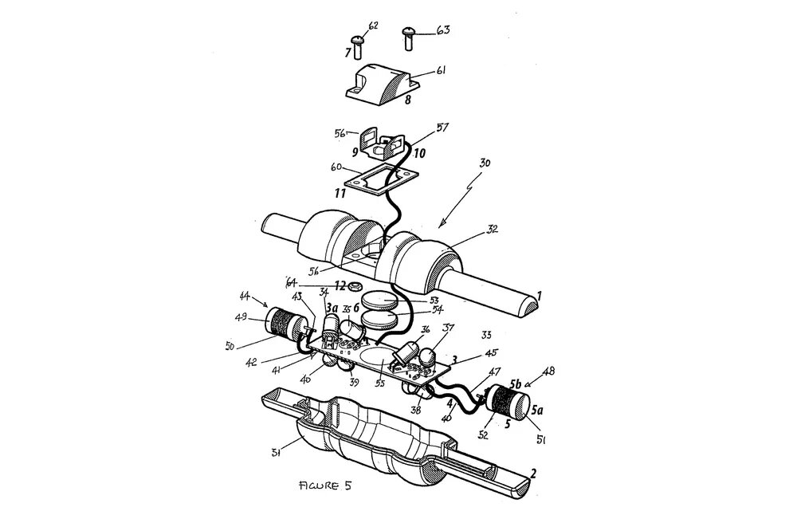
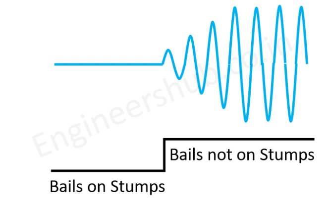
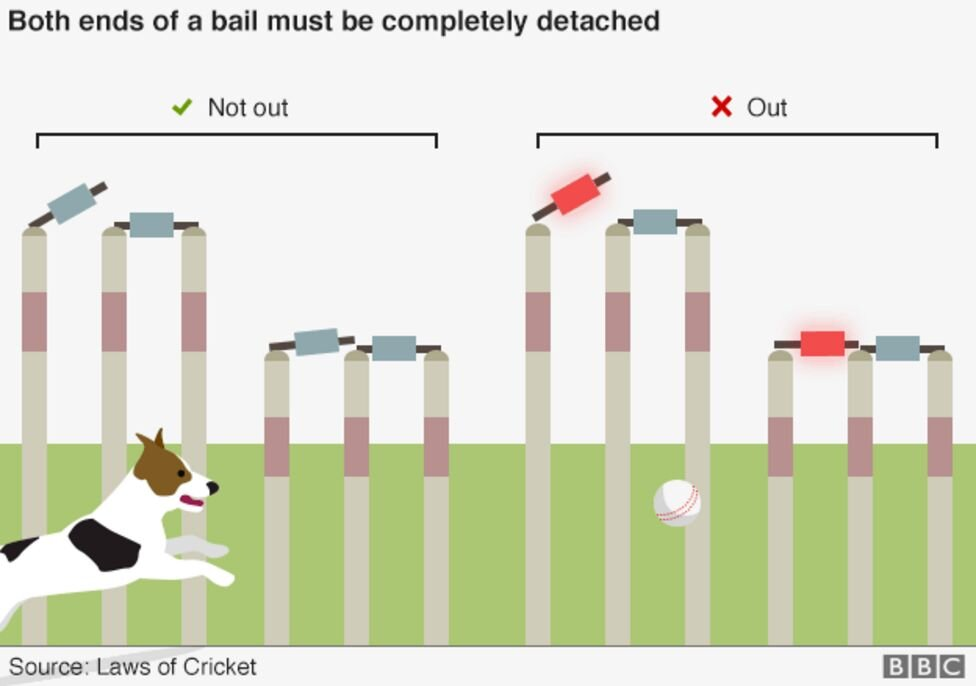

ක්රිකට් තරඟයක් නරඹන හැමෝම දැක ඇති දැණ් වසර කිහිපයක ඉඳලා විකට් ඉණි වලින්, ඒ කිව්වේ stumps වලින් සහ බේල්ස් වලින් රතුපාට එළියක් පත්තු වෙනවා. මේ පද්ධතිය ක්රිකට් ක්රීඩාවට අළුතෙන් හඳුන්වා දුන් තාක්ෂණයක් වන අතර මෙය LED Wickets system ලෙසින් හඳුන්වනවා. නමුත් මෙය ලොව පුරා ප්රසිද්ධ වී ඇත්තේ Zing Cricket Wicket යනුවෙනි.
මේ වෙනකොට සමාජ ජාලා වල පලවෙන ඇතැම් පල කිරීම වල සඳහන් වෙන කරුණක් තමයි මේ විකට් නිපද්වීම සඳහා ශ්රී ලංකාවේ වෙසන තොරණ් හදන අයෙකුට වුවද හැකියාව ඇති අතර, ඒ සඳහා ඔවුන්ට වැයවන්නේ රුපියල් 1,500ක් වැනි ඉතාමක් සුළු මුදලක් බවත් ය. ඇත්තටම LED Wicket system එක නිපදවීමට එවැනි සුළු මුදලක්ද වැය වන්නේ?
සියල්ලටම කලින් අපි බලමු මොකක්ද මේ LED Wicket System එහෙමත් නැත්තම් Zing Cricket Wicket කියන්නේ මොකක්ද කියල.
ඇයි LED Wicket System එකක්?
අපි මෙහි තාක්ෂණික පැත්ත ගැන සාකච්ඡා කිරීමට කලින් මෙවැනි පද්ධතියක් නිපදවීමට හේතූන් පිළිබඳව සාකච්ඡා කරමු.
ක්රිකට් කියන්නේ ශ්රී ලංකාව, ඉන්දියාව, එංගලන්තය, නව සීලන්තය, දකුණු අප්රිකාව, ඕස්ට්රේලියාව, බටහිර ඉන්දීය කොදෙව් දූපත්, පකිස්තානය ඇතුලු තවත් රටවල් විශාල ප්රමාණයක ජනප්රියතම ක්රීඩාවක් කිව්වොත් අපි නිවැරදියි. ක්රිකට් ක්රීඩාවේදී පිතිකරුවන් වැඩි වශයෙන් දැවී යන අවස්ථාවන් දෙකක් ලෙස දුවද්දී දැවී යාම (Run-out) සහ කඩුල්ල බිඳ හෙලීම (stump) මඟින් සිදුවන දැවී යාම් හැඳින්විය හැකියි.
කඩුල්ල බිඳ හෙලීමක් නිවැරදිව දැවීයාමක් වන්නේ කෙසේද? කියල කවුරුන්ම හරි ඇහුවොත් ක්රිකට් ක්රීඩාවේ නීතීන් සහ රීතීන්ට අනුව කඩුල්ලේ ඇති බේල්ස් එය රඳවා ඇති අන්ත දෙකෙන්ම ගිලිහී යාම සිදු විය යුතු වනවා. දුවද්දී දැවීයාමකදී පිටියේ එක් අන්තයක සිට අනිත් අන්තය වෙත දුවගෙන එන විට ආරක්ෂාකාරී සීමාව පසු කිරීමට ප්රථමව පන්දුව මඟින් විකට්ටුව කඩා දැමීමෙන් එය දැවී යාමක් බවට පරිවර්ථනය කරගැනීමේ හැකියාව අනෙකුත් කණ්ඩායමට හිමිවනවා.
නමුත් මෙහිදී එය නියම දැවී යාමක් ලෙස වාර්තා වීමට නම් කඩුල්ලේ උඩ රඳවා ඇති බේල්ස් විකට්ටුවේ දෙඅන්තයෙන්ම ගිලිහී යාම සිදු වුවත් ඇතැම් අවස්ථාවලදී එය නියමාකාරයෙන් නිරීක්ෂණය කල නොහැකි අවස්තාවලදී ඇතැම් විට බේල්ස් එක අන්තයකින් පමණක් ගිලිහි ගිය අවස්ථාවන් වලදී පවා එය දැවී යාමක් ලෙස වාර්තා වී තිබුණා. එමෙන්ම ඇතැම් අවස්ථාවන් වලදී බේල්ස් එක අන්තයකින් ගිලිහී යාම ක්රීඩකයා ආරක්ෂාකාරී සීමාව පසු කිරීමට ප්රථමවත් අනෙකුත් අන්තය ආරක්ෂාකාරී සීමාව පසු කිරීමෙන් පසුවත් ගිලිහී යාමේ අවස්ථාවන් වලදී පවා එය දැවී යාමක් ලෙස වාර්තා වූ අවස්ථා පැවතුනා.
මේ ආකාරයට දැවී යාමක් සිදු නොවන අවස්ථාවන් වලදී දැවීයාමක් ලෙස තීරණ ලබා දීමත් දැවී යාමක් සිදු වන අවස්ථාව වලදී එය දැවී නොයාමක් ලෙස තීරණ ලබා දීමත් වැනි සිද්ධීන් නිසා, එවැනි අත්වැරදීම් වළක්වා ගැනීමේ දැඩි උවමනාවක් සහ අවශ්යතාවයක් ජාත්යන්තර සහ ලීග් ක්රිකට් තරඟාවලි වලට පැවතුනා.
මේ සඳහා වන සම්පූර්ණ විසඳුම ලබා දීමට Zings සමාගම සමත්වූයේ බේල්ස් නියමාකාරයෙන් කඩුල්ලෙන් ඉවත්වීමත් සමඟින් ආලෝකය දැල්වෙන බේල්ස් සහ විකට් ඉනි හඳුන්වාදීමත් සමඟිනි.
LED Wickets System හඳුන්වා දුන්නේ කවුද?
ඔස්ට්රේලියානු ඉංජිනේරුවෙකු වන Bronte Eckermann විසින් තමයි මේ නවතම ZIng Bails නම් තාක්ෂණය ක්රිකට් ලෝකයට හඳුන්වා දීම සිදු කරන්නේ. මේ සඳහා ඔහුට අදහස ඇති වන්නේ ඔහුගේ දියණිය විසින් ඇයගේ සෙල්ලම් බඩු සමඟින් ක්රීඩා කරමින් සිටින විට එහි තිබුණු එක් සෙල්ලම් බඩුවක ඇති LED bulb සහිත ක්රියාවලික් දැකීමෙන් පසුවයි. ඒ සමඟින් ඔහුගේ හිතට ආ අදහස වූයේ විකට්ටුවෙන් බේල්ස් නියමාකාරයෙන් ඉවත්වීමේදී LED බල්බ් දල්වා දැනුම් දීම සිදු කිරීමයි. Bronte Eckermann, Zing Wicket පද්ධතිය නිර්මාණය කල Zing International නම් ඔස්ට්රේලියානු සමාගමේ අධ්යක්ෂකවරයෙකි.
මේ LED Wickets system එක ක්රියාකරන්නේ කෙසේද?
මේ නව බේල් සඳහා බලය ලබා දෙනු ලබන්නේ අඩු වෝල්ටීයතාවයකින් යුතු බැටරි මඟිනි. මේ සෑම බේල් එකක්ම කඩුල්ලේ ඉණි වලින් ගිලිහීමේදී එය හඳුනා ගැනීමේ මයික්රෝ ප්රොසෙසර් එකකින් සමන්විත වනවා. එහි ක්රියාකාරීත්වය කෙසේද යත්, බේල්ස් කඩුල්ලෙන් ගිලිහීමේදී එහි බල්බ දැල්වීමට ගතවන්නේ තප්පරයෙන් 1000කින් 1ක් වැනි ඉතාමත් සුළු කාලයකි.

ඉහත ඡායාරූපයේ දැක්වෙන්නේ Zing International ආයතනය විසින් නිපදවනු ලැබූ බේල්ස් වල හරස් කඩක් සහ එහි අඩංගු වන කොටස් වේ. එහි ඇති සියළු දෑ අප විසින් මෙහිදී සාකච්ඡා කිරීමට බලා පොරොත්තු නොවන නමුත් ඉහත දැක්වෙන 44 සහ 48 යන කොටස් වලින් දැක්වෙන්නේ බේල්ස් තුල ඇති Oscillator පරිපථයේ කොටසකි. මෙම Oscillator පරිපථය හරහා ඉතාමත් ශක්තිමත් electromagnetic field එකක් නිපදවනු ලබනවා.
කඩුළු වලට බේල්ස් සවිවන ස්ථානයන්වල යකඩ වලින් කොටසක් යොදා ඇති අතර, ඒ මත බේල්ස් තැබීමෙන් පසුව ඒ හරහා විදුලි ධාරාව ගලාගෙනු යනු ලබනවා. ඒ හරහා බේල්ස් වල ඇති Oscillator පරිපථය මඟින් ඇති කරනු ලබන electromagnetic field එක නිද්රාශීලීත්වයට පත්කරනු ලබනවා. කඩුල්ලෙන් බේල්ස් ඉවත්වන විටදී ඉහත කී විදුලි ධාරාව විසන්ධිවීමත් සමඟින්ම Oscillator පරිපථයේ විස්ථාරය (amplitude) එක සක්රිය වීමෙන් ඒ හරහා ඇති වන electromagnetic field එක හඳුනා ගැනීමත් සමඟම බේල්ස් තුල ඇති LED බල්බ් දැල්වීම සඳහා වන ස්විචය ක්රියාත්මක වීම සිදු කෙරෙනවා. මේ සඳහා ගතවන්නේ මිලි තප්පර 1ක් වැනි සුලු කාලයකි. පහතින් දැක්වෙන්නේ Oscillator පරිපථයේ විස්ථාරය ඇති වන ආකාරයයි.

මෙම ලිපියේ ආරම්භයේදීම වාගේ අප විසින් සාකාච්ඡා කල ආකාරයට ක්රිකට් ක්රීඩාවේ නීතීන්ට අනුව පිතිකරුවෙනු දැවී ගියා සේ සැලකෙන්නේ කඩුල්ලෙන් බේල්ස් එකක අන්ත දෙකම ඉවත් වූ පසුවය. (බේල්ස් දෙකෙන් එකක්) LED Wicket system එකේදී බේල්ස් එකක අන්ත දෙකම කඩුල්ලෙන් ඉවත් නොවුනහොත් LED බල්බ දැල්වීම සිදුවන්නේ නෑ. එහිදී පිතිකරුවෙකු ඇත්තටම දැවී ගියාද නැද්ද යන්න නිවැරදිව හඳුනා ගැනීම සිදු කල හැකිය. මෙය වඩාත් පැහැදිලිව අවබෝධ කරගැනීමට ඔබට පහත ඡායාරූපය නැරඹීමෙන් හැකියාව ලැබෙනු ඇත.

LED Wicket system එක, එහෙමත් නැත්තම් Zings Wicket පද්ධතිය තුල භාවිතා වන තාක්ෂණය ඒ ආකාරයෙනි. කෙසේ වෙතත්, මේ තාක්ෂණය භාවිතා කර කඩුළු නිර්මාණය කිරීමේදී ඇතිවුනු ඊලඟ ගැටළුව වූයේ මේ සඳහා යොදා ගන්නා අමුද්රව්ය මොනවාද යන්නය. මෙම තාක්ෂණය භාවිතා කිරීමට ප්රථමව කඩුලු සහ බේල්ස් නිර්මාණය සඳහා යොදා ගනු ලැබුවේ අමුද්රව්ය වූයේ දැවයි.
Zing Wicket පද්ධතිය සඳහා භාවිතා කරනු ලබන්නේ ප්ලාස්ටික් සංයුක්ත අමුද්රව්යක් වන අතර මෙහිදී භාවිතා වන පරිපථයන් ඒ තුල රඳවා ඇත අතර එය පැයට කිලෝමීටර් 160ක වේගයකින් පැමිණෙන පන්දුවක බලය වුවද දරා ගැනීමේ හැකියාව ඇත.
අන්තරජාතික ක්රිකට් කවුන්සිලය Zing Wicket සඳහා අනුමැතිය ලබා දීම සිදුකරන්නේ 2013 වර්ෂයේදී වන අතර මුලින්ම ජාත්යන්තර තරඟයකදී භාවිතා කිරීම සිදු කෙරෙනුයේ බංගලාදේශයේ පැවැත්වුනු ලෝක කුසලාන විස්සයි විස්ස තරඟාවලියේදීය. ඊට පෙර අන්තර්ජාතික ක්රිකට් කවුන්සිලය එය ඔස්ට්රේලියාවේ බිග් බෑශ් ලීග් තරඟාවලිය සඳහා යොදාගෙන පරීක්ෂණ කටයුතු සිදු කිරීම කරන ලදී.
Zings Wicket system එක නිසා මේ වන විට දුවද්දී දැවීයාමක් හෝ කඩුළු බිඳ දැමීමකදී එය නිවැරදිව විනිශ්චය කිරීමේ හැකියාව ලැබී ඇති බැවින් සාධාරණ ක්රීඩාවක නිරත වීමේ හැකියාව හිමිවී ඇත.
Sources: Android Wadakarayo